内容要点
一段 12 分 34 秒的剪映专业版入门教程，帮你建立软件底层架构认知。打开剪映只需记住三点：左侧模板套用=直接出片（适合零基础）、云空间=电脑手机平板同步剪辑（需登录）、中间官方功能介绍（新手不管）；最上方「开始创作」才是剪辑主界面，剪辑中途退出会实时保存为草稿。剪辑界面三大板块：左侧效果栏（添加视频/图片/文字/效果）、中间预览区（实时观看）、底部时间线（剪辑核心）。效果栏自上而下依次讲解：素材（导入/账号收藏/AI素材/官方素材库）、音频（视频提取/链接下载/收藏音乐/AI音乐/音乐库/音效）、文本（新建文本/智能包装/花字库/文字模板/智能文本识别字幕）、贴纸（贴纸库/图形库）、特效（画面特效管环境/人物特效管人）、转场（拖到片段间调时长）、字幕、智能包装、滤镜（一键预设色彩）、调节（调色：基础/HSL曲线/色轮；调节管整条时间线、调整管单个片段）、模板（成品框架替换素材）、数字人（虚拟口播）。结语作业：上手熟悉九个功能。
知识结构
模板套用直接出片、云空间多端同步、官方介绍新手不管；开始创作=主界面，退出实时保存草稿。
效果栏加素材/预览区观看/时间线排列剪辑；素材导入加号或拖拽。
账号收藏/AI素材/语音素材多端同步/官方素材库分类齐全。
视频提取/链接下载/收藏音乐/AI音乐/音乐库搜索/音效热梗。
新建文本/智能包装/花字库/文字模板/智能文本识别字幕+歌词+文稿匹配。
贴纸库+图形库；画面特效管环境人物特效管人；转场拖片段间调时长。
识别字幕/歌词；滤镜一键预设色彩；调节=调色（HSL曲线/色轮）。
模板成品框架替换素材导出；数字人虚拟口播；作业=上手九功能。
剪映专业版底层架构=界面三板块（效果栏/预览区/时间线）+效果栏九个功能链路。上手顺序：①素材导入→②音频（视频提取/链接/收藏/AI/音乐库/音效）→③文本（新建/智能包装/花字/模板/智能字幕）→④贴纸→⑤特效（画面管环境人物管人）→⑥转场（拖到片段间）→⑦字幕→⑧滤镜（一键预设）→⑨调节（调色，调节=整条时间线/调整=单个片段）。模板=成品框架替换素材，数字人=虚拟口播。核心方法：眼睛看不记住，上手才记住。
00:00-00:52打开剪映：记住三个点
开场定位：「一个视频教会你剪映专业版，让你彻底理解剪映软件的底层架构。」
打开后的界面只需记住三点：第一，左侧的模板套用是直接出片，适合完全零基础；第二，云空间可以电脑手机平板同步剪辑，不过需要先登录；第三，中间一堆官方功能介绍、简易教程以及AI视频图文入口，新手暂时不用管。
「最上方的开始创作，是真正进入剪辑的主界面。」剪辑途中如果退出了，剪映会实时保存，以草稿的形式储存到下方，不用担心工程丢失。
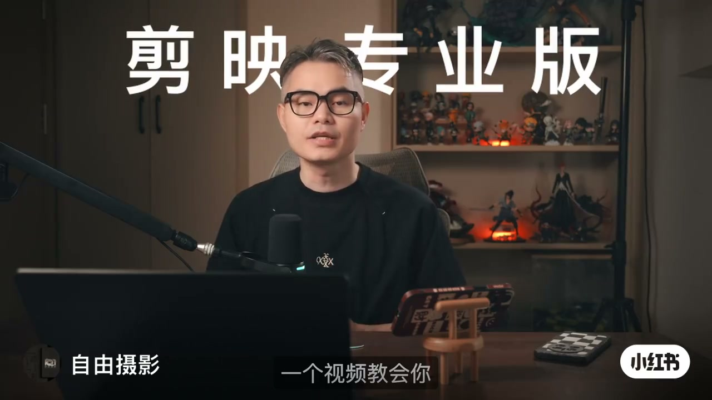
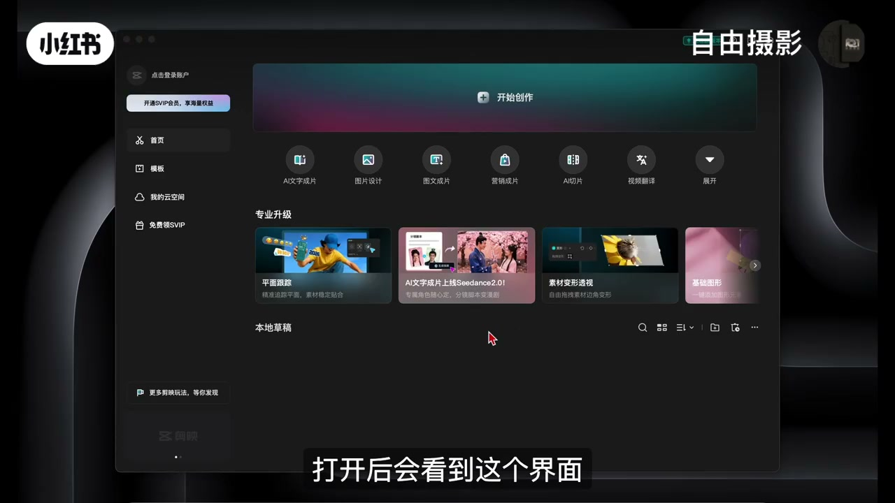
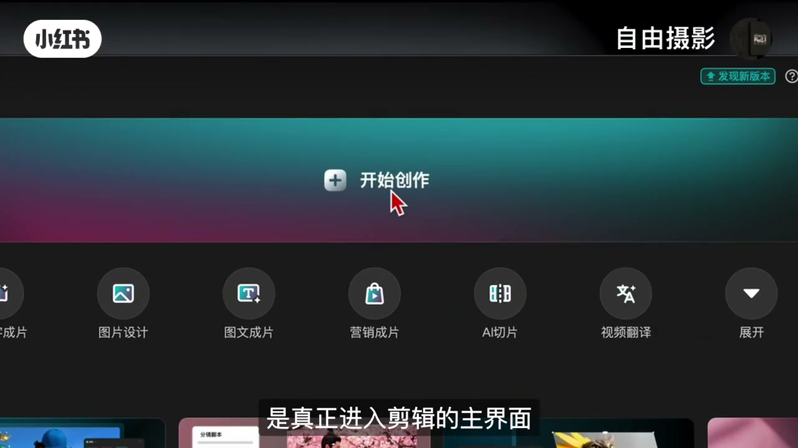
00:52-01:52剪辑界面三大板块
进入剪辑界面后，界面主要分成三个板块：「最左侧的是效果栏，你可以在这里添加视频、图片、文字以及各种效果；中间是预览区，实时观看素材以及剪辑后的效果；底部是时间线，这是剪辑的核心区域，所有的素材都会在这里排列和剪辑。」
新手最需要搞懂的是左侧效果栏，因为所有要剪辑的东西都得先从这里加进去。
素材导入：点加号选中文件点击导入，或者打开文件夹直接拖拽进来；素材拖到时间线上就可以剪辑，不需要直接按delete删除。
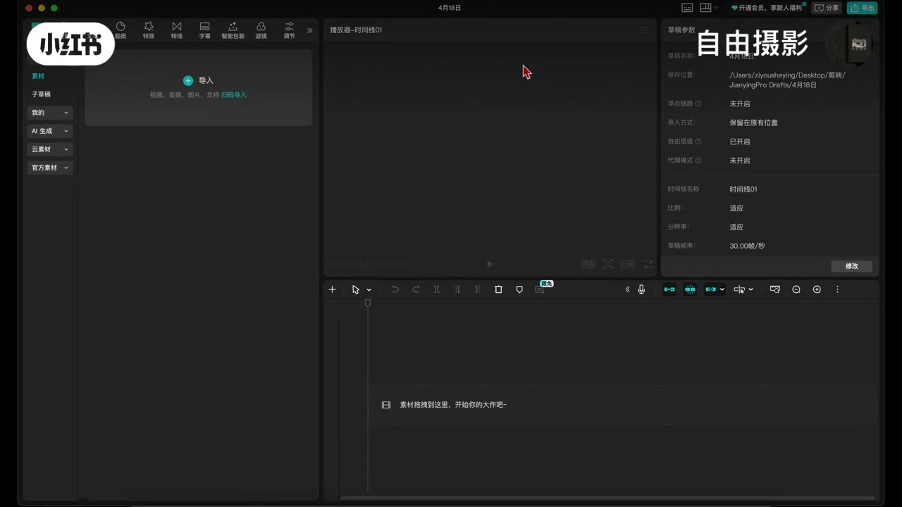
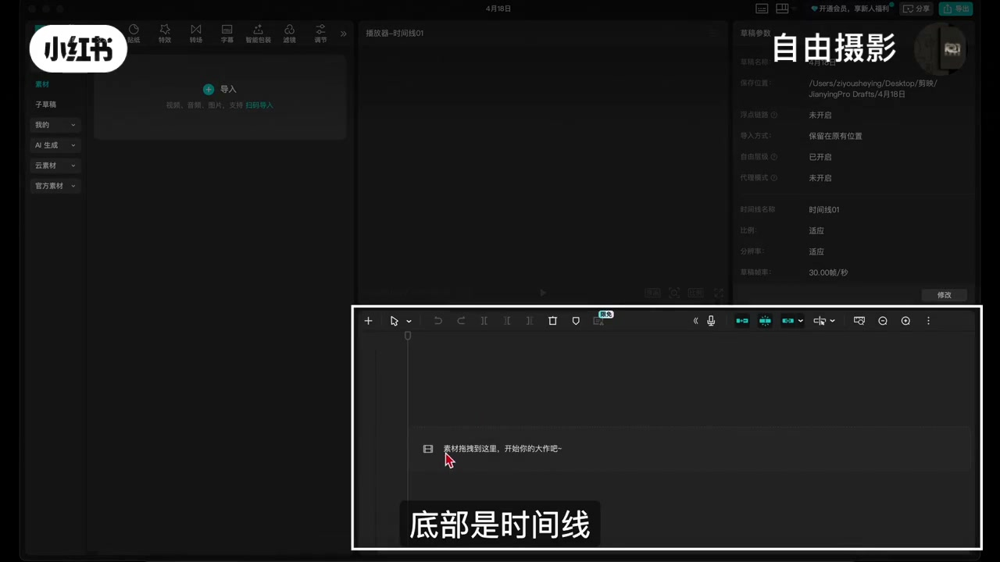
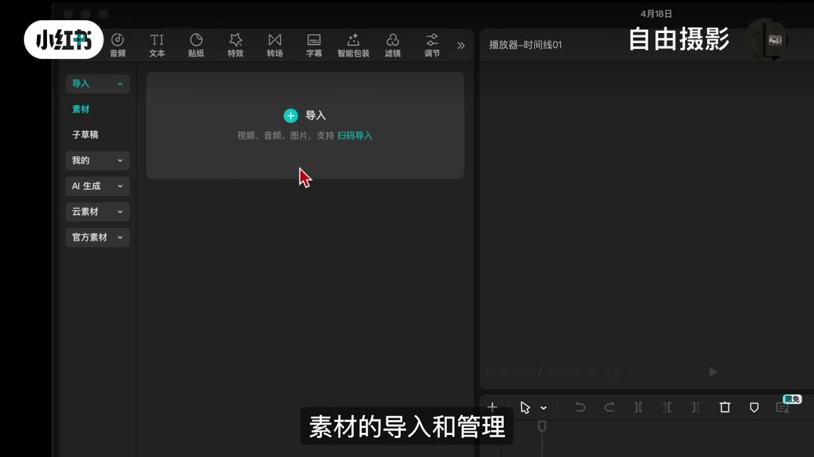
01:52-02:47素材管理：四个实用功能
账号收藏：登录账号后把经常要用的素材收藏起来，下次剪辑不用翻文件夹，直接在收藏里就能找到，非常省时间。
AI素材：以文字的形式输入想法，就可以生成图片或视频素材。
语音素材：用来多设备同步，电脑上存的素材手机上也能接着用。
官方素材库：分类非常齐全——热门、节日、美食、旅行，几乎需要的主题都能找到，而且素材经常更新。
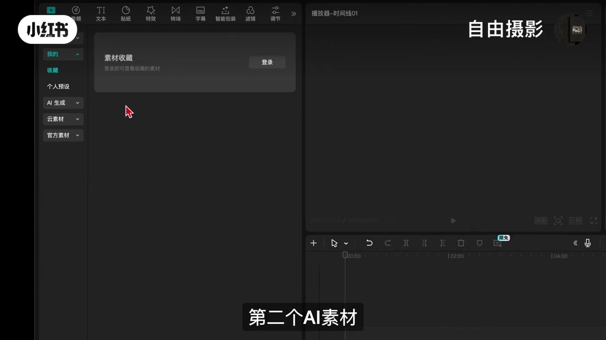
02:47-04:04音频导入：四类方式
第一种从视频素材中提取音乐：点击音频提取，导入视频后得到没有画面只有音频的素材；还有链接下载功能，复制抖音里的视频链接直接粘贴就能导入音频。
第二种是收藏的音乐，在抖音里收藏的歌曲这里会同步显示（需先登录账号）。
第三种AI音乐：输入想要的风格或想法关键词，自动生成一段原创音乐。
第四种音乐库：查找任何类型的歌曲，或用关键词搜索背景音乐；最下面是音效——转场音效、氛围感音效，甚至一些热梗语录都非常实用。
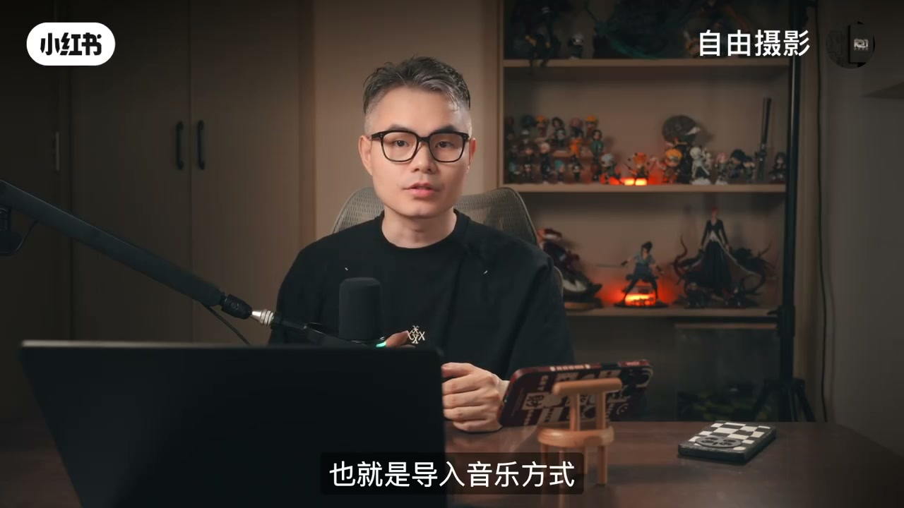
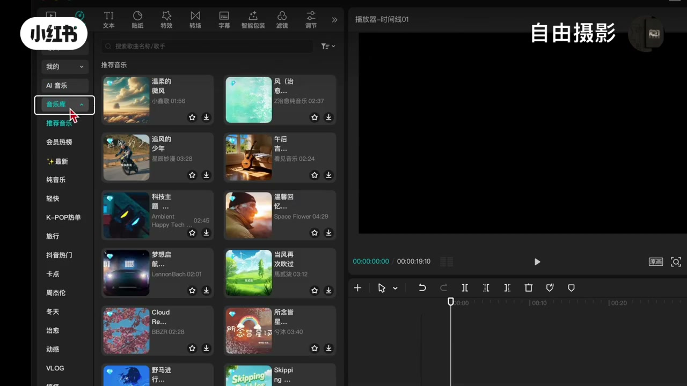
04:04-06:40文本五个常用功能
新建文本：点击加号监视器里出现默认文本框，可移动位置、调整大小，也可在右侧参数控制区更改文字内容、字体、颜色等。
智能包装：适用于信息流剪辑，时间线初剪完成后选一个风格，它会根据画面信息自动匹配动画效果和贴纸，适合想快速出效果的新手。
花字库：剪映做好的默认效果，字体分类详细（热门类型、综艺类型等），可在花字基础上改自己的文字。
文字模板：比花字更完整，自带排版和动画，适合做标题、字幕条这类效果；使用前鼠标左键预览，点加号添加到画面。
智能文本：最常用的智能字幕——只要素材里有人讲话，点击识别自动生成字幕；还有识别歌词（给音乐加歌词，多种排版）和文稿匹配（输入文案自动匹配时间线）。注意：AI不是万能的，可能有错别字，操作完最好自己检查一遍。
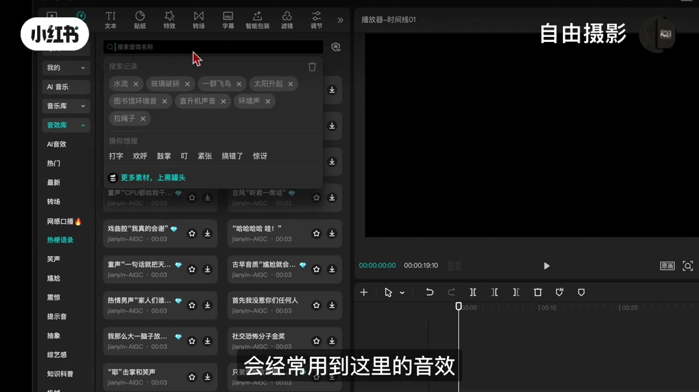
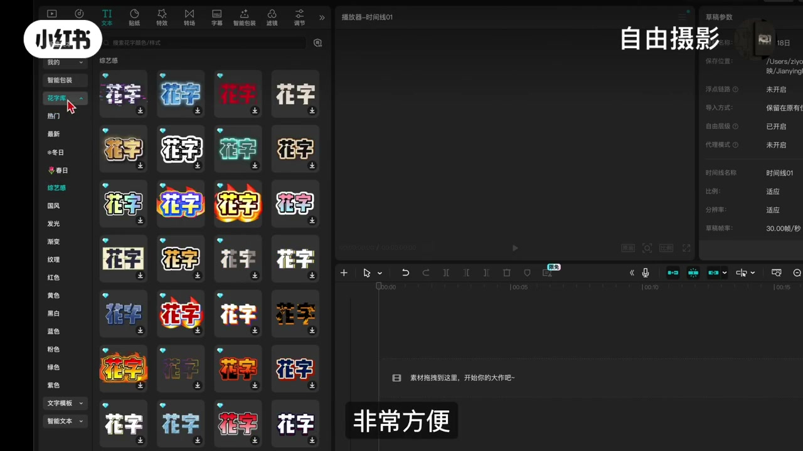
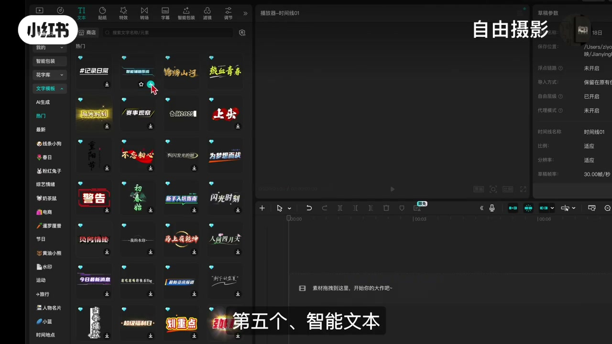
06:40-08:47贴纸·特效·转场
贴纸功能主要有两个类目：贴纸库有各种主题的预设装饰元素，做笔记或标注时可快速增加作品的趣味表达或视觉分区；图形库是基础几何形状（矩形、圆形、箭头、自由形状），做结构图、流程图非常实用。
特效有两个类目：画面特效针对画面或背景，比如模糊、光晕、噪点、色彩分离——营造氛围或提升质感；人物特效针对人物主体，比如抠图换背景、人像光效、美颜、轮廓光。一句话：「画面特效管环境，人物特效管人。」
转场就是两个场景或片段之间的过渡效果（淡入淡出、叠化、滑动、翻页）。片段之间光线、影调、色彩都不一样，直接硬切会显得生硬，加一个转场让衔接过渡更自然流畅。操作：选一个转场效果拖到两个片段之间，拖动效果边缘可以调时长。
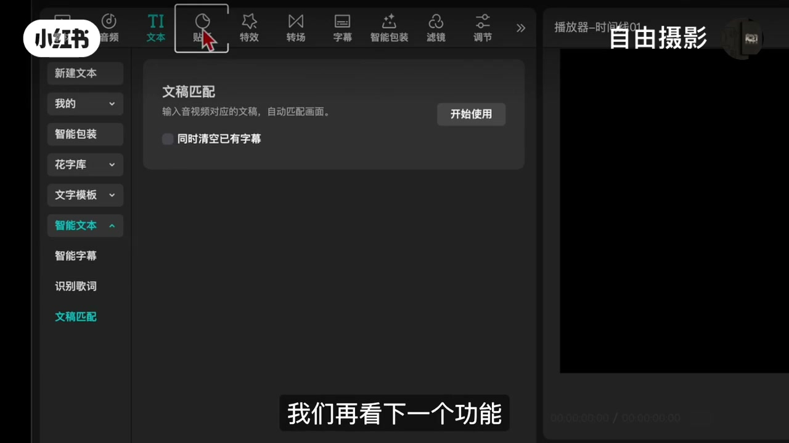
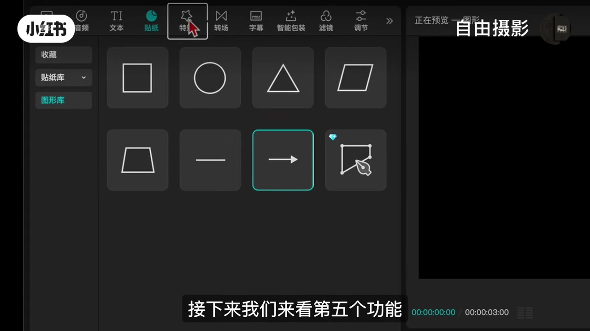
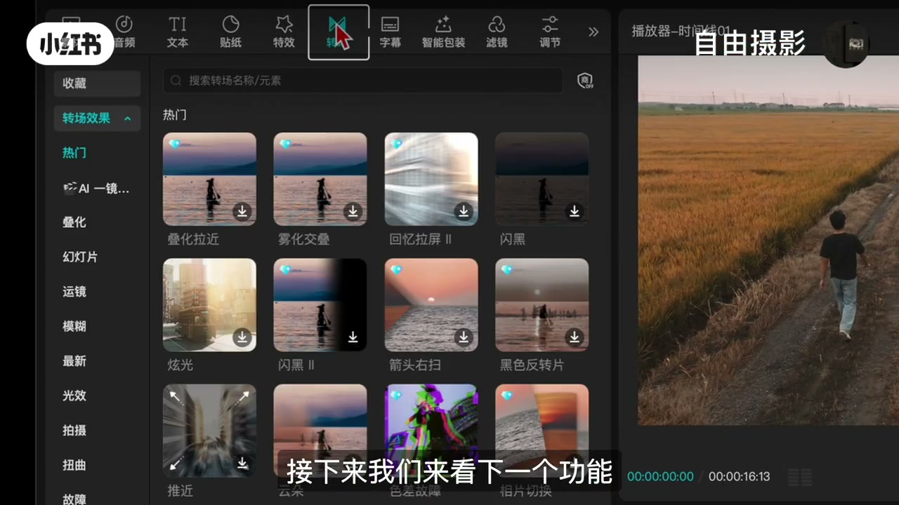
08:47-10:54字幕·滤镜·调节
字幕功能在文本剪辑里讲过了，这里再强调两个：识别字幕——素材里有人讲话点击识别就自动生成字幕；歌词识别——识别素材里的歌曲，自动生成同步歌词，一句一句排列好。
滤镜其实就是一键给画面套上预设好的色彩风格，风格分得很细——人像、风景、影视级；点一个滤镜整体色调就变了。用法：选中滤镜拖到时间线上、拖动边缘和素材对齐，还可以通过右上方的控制区调整滤镜强度。
调节说得直白一点就是调色。点击素材上方调节上的加号，时间线上会出现一个黄色的素材，右侧控制器可调参数有基础调整、HSL曲线、色轮。选中下方素材片段后，右上方控制器第5个工具也会出现一个调整，功能一致——只是调节针对整条时间线，调整针对单个片段。
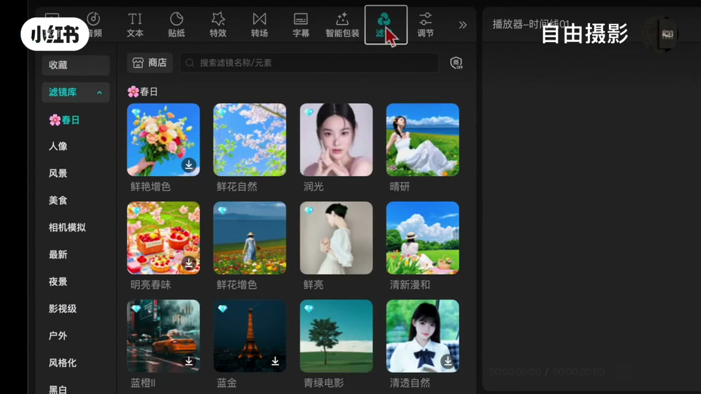
10:54-12:34模板·数字人·结语作业
数字人：生成一个虚拟人物进行口播视频，稍微复杂一点，后面单独做一期。
模板：剪映已经帮你做好的成品框架，点开预览，把要用的模板拖到时间线上，点击素材中间位置的替换，把需要的素材一个一个拖进去替换，替换好后点空格键播放预览，没有问题就可以导出了。
结语：「这个版本的功能都讲完了，现在大家可以打开剪映，从上到下把这九个功能都熟悉一遍。眼睛看过不一定能记住，上手了才容易记住。」下节课讲从导入素材、分割、删除、加音乐、加文字到剪辑成片和最终导出。
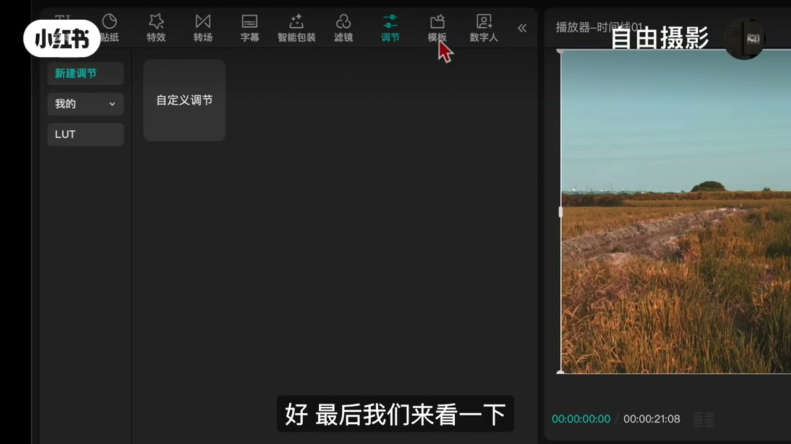
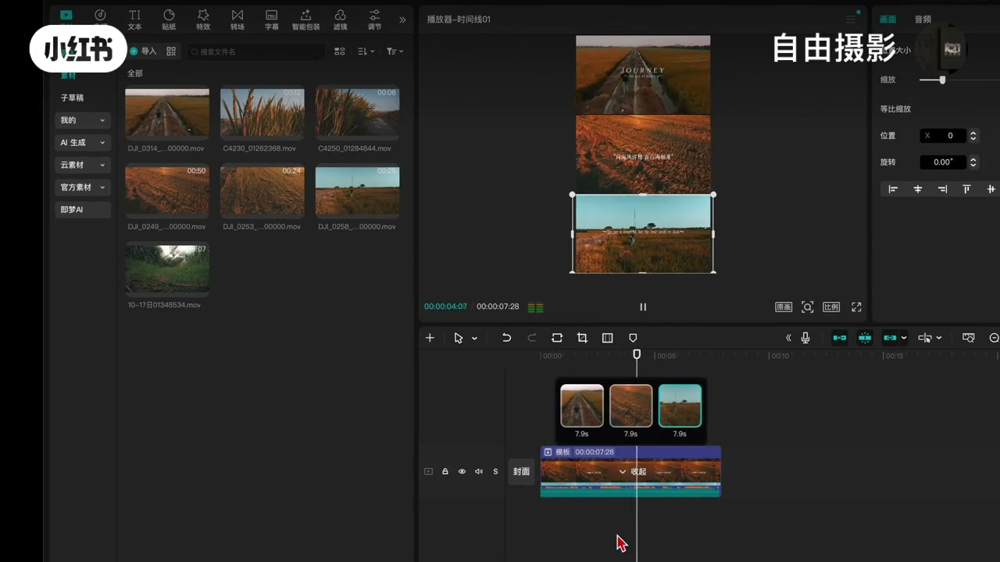
完整转录（392段）
以下文本由 Whisper medium 模型自动转录，可能存在少量识别误差，已尽可能修正。
一个视频教会你检映专业版
让你彻底理解检映软件的底层架构
首先打开检映
打开后会看到这个界面
在这里我们只需要记住三个点
第一左侧的模板套用是直接出片
适合完全零基础
第二云空间
比如电脑手机平板
它是可以同步剪辑
不过需要先登录
中间这一堆图片是官方功能介绍
简易教程以及AI视频图文入口
新手暂时不用管
进入剪辑界面都会有
那我们在最上方的开始创作
是真正进入剪辑的主界面
另外
剪辑途中如果退出了
检映会实时保存
以超高的形式储存到下方
不用担心剪辑工程不见了
好
我们这里直接点击开始创作
进入剪辑界面
这也是我们这节课最核心的地方
进来之后
界面主要分成三个板块
最左侧的是效果栏
你可以在这里添加视频
图片
文字以及各种效果
中间是预览区
也就是在这里实时观看素材的区域
以及剪辑后的效果
底部是时间线
这是剪辑的核心区域
所有的素材都会在这里排列和剪辑
那这三个板块里
新手最需要搞懂的是左侧效果栏
因为所有要剪辑的东西
都得先从这里加进去
那左侧这个面板里
新手最需要先搞定的是素材的导入和管理
第一个导入素材是可以直接点这个加号
选中你需要的文件
然后点击导入
或者打开文件夹
直接把需要的素材拖拽进来
素材拖到时间线上就可以剪辑
假如不需要
直接按delete删除就可以
素材导进来之后怎么管理呢
简硬提供了几个很实用的功能
第一个账号收藏
登录账号后
你可以把经常要用的素材收藏起来
下次剪辑时就不需要再翻文件夹
直接在收藏里就能找到
非常的省时间
第二个AI素材
在这里只需要以文字的形式输入你的想法
就可以生成图片或视频素材
第三个语音素材用来多设备同步
比如你在电脑上存的素材
手机上也能接着用
最下面的这个也是我个人比较喜欢用的
官方素材库
点开之后你会发现里面分类非常曲线
热门的
节日的
美食的
旅行的
几乎你需要的主题都能找到
而且这些素材会经常更新
可以给我们带来更多花样的效果
讲完素材导入
我们再来看看效果栏里第二个功能
音频
也就是导入音乐方式
导入音频的方式有很多
我们来看看具体有几种
第一种可以从视频素材中提起音乐
点击音频提起
然后在文件夹里选择你需要的视频
点击导入
就可以得到一个没有画面
只有音频的素材
你还可以使用链接下载功能
只需要复制抖音里的视频链接
然后在这里直接粘贴
就能导入音频进行使用
第二种是收藏的音乐
你在抖音里收藏的音乐歌曲
在这里会同步显示
不过要注意
需要先登录账号才可以同步
第三种AI音乐
在这里输入你想要的风格
或者想法关键词
它会自动生成一段原创音乐
这个我会用的比较少
第四种就非常好用
音乐库
你可以在这里查找任何类型的歌曲
也可以用关键词
搜索任何你想要的背景音乐
最下面这个是音效
这里面音效还是很虚浅的
转场音效
氛围感音效
甚至一些热耕语录都有非常实用
我平时剪辑视频
会经常用到这里的音效
好
我们再来看看下一个功能
好音频讲完了
我们再来看第三个功能文本
文本类目里有五个常用功能
我挨个讲一下
第一个新建文本
点击这个加号
监视器里就会出现默认文本框
也就是输入文字
你可以在监视器里直接移动文本位置
调整大小
也可以在右侧的参数控制区
更改文字内容
字体
颜色等
画面里任何的调整
都可以在右侧这个窗口去完成
非常的直观
我们再回过来
在他旁边有个叫添加口播稿的功能
点击一下
在这里
AI会根据你的主题
自动生成口播稿
如果你是新手
不会写文案
这个功能就非常好用
另外还有一个是导入本地字幕
如果你已经有做好的字幕文件
可以直接从这里去导入
再来看第二个
智能包装
这个功能适用以信息流剪辑
当你在时间线上
把镜头初剪完成之后
在这里选择一个你想要的风格
它会根据你的画面信息
自动给你匹配动画效果和贴纸
非常适合想快速出效果
又不想自己调的新手
第三个
花字库
这是检验已经做好的默认效果
简单的理解就是字体
系统把字体分得非常详细
热门类型的
中意类型的等等
你可以在花字的基础上
更改自己需要的文字内容
非常方便
第四个
文字模板
比花字更完整一些
自带排版和动画
适合做一些标题
字幕调这类效果
使用前
用鼠标左键可以预览素材效果
然后点击加号就能添加到画面中
第五个
智能文本
这个是最常用的智能字幕
只要视频素材里有人讲话
点击识别就会自动生成字幕
就不需要自己打字
这个文字识别
对于剪辑效率来说
真的非常好用
另外还有识别歌词
就是给音乐加歌词
你可以在这里选择不同的排列方式
各种类型排版
都会有
还有最下方这个文稿匹配
对于很多新手
很多时候输入完字幕
文字长度和视频总长度
经常对不上
有了这个功能
你只需要输入文案
它就会自动匹配时间线
非常便捷
但一定要注意
AI不是万能的
可能会有一些错别字
操作完
最好是自己检查一遍
有错别字
然后手动改一下
好文本讲完了
我们再看下一个功能
贴纸
贴纸功能主要有两个类目
贴纸库和图形库
贴纸库里有各种主题的贴纸
是系统预设好的
带有风格化的装饰元素
平时做笔记或标注的时候
可以快速增加作品的群序表达
或视觉分区
而图形库
就是基础的几何形状
比如矩形
圆形
箭头
自由形状
如果你日常要做结构图
流程图
或者像我这种校程类的
需要干净规整的形状
那图形库就非常好用了
接下来我们来看第五个功能
特效
同样有两个类目
画面特效和人物特效
画面特效是针对画面或背景
添加的视觉效果
比如模糊
光韵
噪点
色彩利菌这些
平时你想营造某种氛围
或者让画面更有质感的时候
直接套一个画面特效
就能快速改变作品的调性
而人物特效
是针对画面中的人物主体进行处理的
比如抠图换背景
人像光效
美颜
或者给人物加一些轮廓光
如果你需要突出人物
或者让人物和场景更好的融合
那人物特效就非常好用了
简单的来说
画面特效管环境
人物特效管人
接下来我们来看下一个功能
转场
转场就是两个场景
或片段之间的过渡效果
比如淡入
淡出
叠化
滑动
翻页这些
平时做视频剪辑时
片段之间光线
影调
色彩都不一样
直接硬切会显得比较生硬
加一个转场
就能让衔接过度更加自然流畅
观众视觉看着也会更舒服一点
操作也很简单
选一个转场效果
拖到两个片段之间
然后时长还可以自己调
只需要拖动效果边缘就可以
想要干净利落的
就选淡入
淡出
想要更有动感的
可以选硬动类型的转场
接下来我们来看第七个功能
字幕
这几个功能在文本剪辑
刚才都讲过了
这里又出现了
我这里再强调一下
识别字母和识别歌词
识别字母就是你素材里
只要有人讲话
你只需要点击识别
它都能自动识别出来
生成对应的文字字幕
而歌词识别
就是识别素材里的歌曲
它会自动生成同步的歌词
一句一句给你排列好
那这两个功能都很简单
至于字幕的其他调整功能
这里就不再重复了
好
那我们再来看第九个功能
滤镜
第八个功能
智能包装
刚才讲过了
滤镜其实就是一键给画面
套上预示好的色彩风格
剪影里的滤镜风格也分得比较细
比如人像
风景
还有一些影视级的
平时你拍完一段素材
如果觉得颜色比较淡
或者氛围不太对
不想自己慢慢调参数
直接点一个滤镜
整体的色调就不一样了
效率非常快
用法也很简单
找一个喜欢的主题风格
选中滤镜
拖到时间线上
再拖动滤镜边缘
让它和素材对齐就行
还可以通过右上方的控制区
调整滤镜的强度
让它浓一点
或者淡一点
下一个功能是调节
说的直白一点就是调色
这里我们先删掉之前这个滤镜
然后我们点击自立音调节上的加号
时间线上就会出现一个黄色的素材
你还可以看到右侧控制器
可以调节的参数
有基础调整
HSL曲线
摄轮
这里我们先删掉黄色素材
假如我们选中下方素材片段
右上方控制器第5个工具
也会出现一个调整
它们的功能其实是一致的
只是调节是可以针对整条时间线
而调整是对单个片段
至于调色这个功能
我已经单独做了一期
讲的非常细
这期你先知道有这两个入口就行
想深入学习的可以去看那一期
好
最后我们来看一下
剩下的两个功能
模板和数字人
数字人稍微复杂一点
就是生成一个虚拟人物进行口播视频
这个后面我也会单独做一期
这一期你先知道有这个功能就行
这里我们把模板再细说一下
刚开始讲课之前提到过模板
我们这里再展开讲一下
先把时间线上素材删掉
模板是什么
就是简易已经帮你做好的成品框架
它有很多类型和风格
我们来点开看一下
比如风格大片
履行这些
我们只需要用鼠标点击模板
就可以预览
觉得哪个模板不错
就把自己要用的模板拖到时间线上
之后点击素材中间位置的替换
就可以看到片段上需要几个素材进行替换
然后在左上方切换到导入素材这里
把需要的素材一个一个的拖进去进行替换
替换好之后点空格间播放预览
那么没有问题就可以导出了
效果就完成了
好了
这个版本的功能都讲完了
现在大家可以打开剪印
从上到下把这九个功能都熟悉一遍
眼睛看过不一定能记住
上手了才容易记住
这就是今天的小作业
等到下节时超课
我会讲到从导入素材分割删除加音乐加文字
剪辑成片到最终导出
你就会发现上手特别简单
好了
这里是自由摄影同学们
拜拜